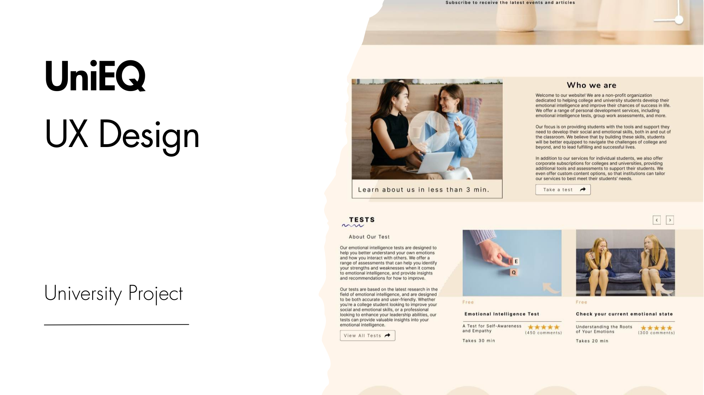
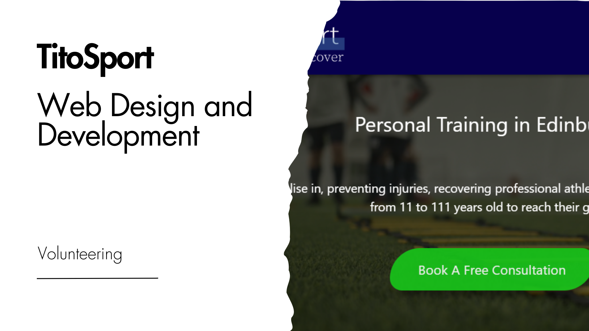
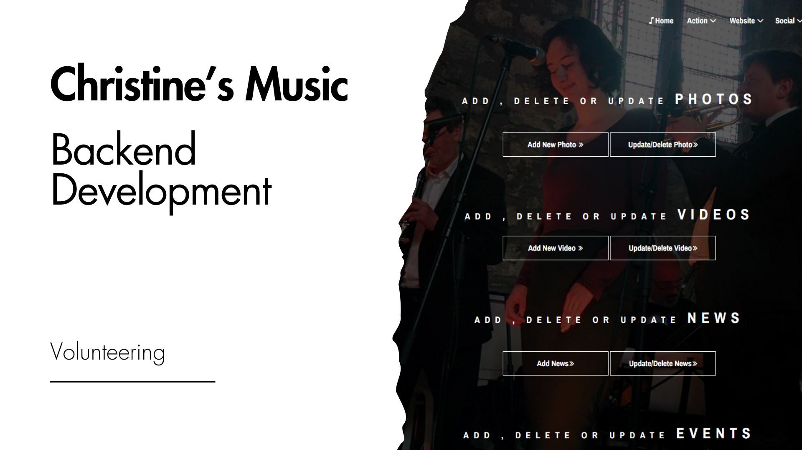
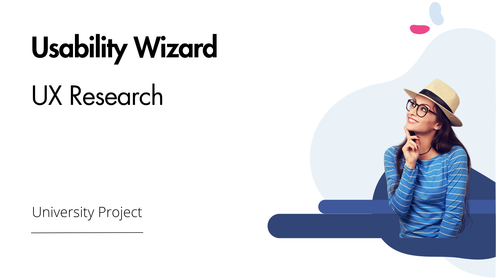

I am a curious explorer on a mission to make things better! I love learning and finding ways to make products awesome while understanding what users really want.

I’m Violeta Lazarova.
-
Download BSc (Hons) Certificate
Hello, I'm a creative professional passionate about UX research, skilled in web development, experienced in UX design and interested in digital business.
Throughout my university studies and freelance work, I've been involved in various web design and development projects. My involvement spans the entire spectrum of digital business creation – encompassing research, analysis, digital marketing, web design, website development, search engine optimisation, and user testing. Check out my portfolio below!


Portfolio
-
UX Design Fast Forward
Project Info
Fast Forward
During my three-month internship at Fast Forward, I worked on a new design for their website. I worked independently to identify user groups and their needs, propose new designs according to findings and requirements, develop a beta testing strategy, and conduct usability tests. Throughout the project, I emphasised continuous improvement and reflective writing.
Following my contribution, the project transitioned to the next group of students. Consequently, the project isn't live yet.
Check out my design files below:
Project Achievements
- User Research: Conducted thorough research to understand each user group's unique needs and expectations.
- Information Architecture: Structured the website's content and navigation to cater to diverse user requirements.
- Usability Testing: Implemented comprehensive usability testing strategies to identify and address potential issues.
- Visual Design: Applied visual design principles to create engaging and visually appealing interfaces.
- Accessibility: Prioritised accessibility to ensure a fully inclusive digital experience for all users.
- Client Allie Cherry-Byrnes
- Date June, 2023 - August, 2023
- Website fastforward.org.uk
- Category UX design
-
UX Design University Project
Project Info
UniEQ
As part of my Visual Interface Design university module, I was tasked with creating a website that is accessible and also aligns with fundamental design principles, incorporating one interactive feature.
Follow The Customer Journey Map:

Check out my design files below:
-
Explore the Style Guide and Navigation Map for future development:
Project Achievements
- Design Principles: Adhere to fundamental design principles to craft a visually appealing and user-friendly product.
- Accessibility Testing: Conduct tests to ensure adequate contrast and readability for all users.
- Content Creation and Content Hierarchy: Develop and organise platform content with a focus on clarity and structure.
- User Journey Mapping: Prepare documentation and user journey maps to assist users in navigating the design effectively.
- Client University Project
- Date 2023
- Figma Files figma.com
- Category UX Design
UX Research Edinburgh Leisure
Project Info
UX Case Study
This university project focuses on enhancing the user experience (UX) of the Edinburgh Leisure Website's booking system, navigating constraints like time limitations and participant access. Targeting Edinburgh University students aged 18-24, the research employs quantitative and qualitative methodologies, including task-oriented observation studies and interviews, to uncover challenges and opportunities. Ethical considerations guide the project, ensuring informed consent and compliance with data protection regulations. In the evaluation phase, the project mitigates biases and follows methodologies, revealing user behaviour patterns and pain points. The findings lead to actionable recommendations for the homepage and cancellation confirmation page. Task performance is assessed against optimal results, and proposed changes are visualised through high-fidelity prototypes, emphasising contemporary and user-friendly design elements.
Check out the project presentation below:
Check out the recorded presentation View Presentation
Project Achievements
- UX Research Excellence: Executed a comprehensive UX research project on Edinburgh Leisure's booking system, showcasing advanced skills and dedication to user experience analysis.
- Strategic Methodologies & Context Focus: Applied strategic UX research methods, targeting Edinburgh University students aged 18-24, with a keen focus on the context of use.
- User-Centric Evaluation: Using quantitative and qualitative approaches to uncover user behaviour patterns, pain points, and emotional responses, ensuring ethical considerations and data protection.
- Bias Mitigation: Identified and mitigated biases such as confirmation and cultural bias, employing well-structured methodologies to maintain neutrality.
- Recommendations and Prototypes: Presented concise findings and applied actionable recommendations, proposing solutions through high-fidelity prototypes for a modern, user-friendly design.
- Critical Discussion and Future Steps: Engaged in a critical discussion on the project's transformative impact, recognising constraints and emphasising the need for additional testing to understand users' expectations.
- Client University project
- Date 2023
- Presentation Link
- Category UX Design
Web Development TitoSportProject Info
Tito Sport
TitoSport started as a front-end project and evolved into a live digital business website. It further advanced into a second version with Python Flask back-end functionality.
This version includes key features like user registration, secure login, and robust password handling for data security. It boasts five main pages, including a personalised user account page. Flask-Security manages user authentication and session control with secure password hashing during registration.
Utilising MongoDB for efficient data storage, the application integrates popular Flask plugins like Flask-mongoengine, Flask-Login, Flask-Security, Flask-WTF, and WTForms. These plugins ensure seamless implementation, providing a secure and user-friendly experience.
For an enhanced UI, Bootstrap 5 and CSS contribute to a stylish and responsive design. Jinja templates and the include directive maintain clean and reusable code. Following best practices, the project maintains a clean and organised structure throughout development.
Front-end development website link: titosport.netlify.app
Python Flask GitHub Files: githubCheck out the video showcasing the Python Flask functionalities:
Design by Violeta Lazarova
Project Achievements
- Front-End: Design and develop a live website.
- Back-End: Developed TitoSport's second version with secure login.
- Database: Efficiently managed data using MongoDB.
- Flask: Maintained clean project structure.
- UI Design: Creating responsive interface using Bootstrap and CSS.
- Plugin Integration: Seamlessly implemented Flask plugins for enhanced functionality.
- Business Development: Conducted competitor analysis and market research, contributing to strategic decision-making.
- Client Tito Sport
- Date 2022
- Website titosport.netlify.app
- Category Web Development, Digital Business
Back-end Development Business websiteProject Info
Jazz Singer Website Project
This project blends university guidelines with real client needs, focusing on creating an interactive website for jazz singer Christine using PHP and a database. I tweaked a template, adding features like photo and video gallery and ensuring the site worked well on different screens. The back-end, powered by SQL and PHP, enables smooth content management and an easy admin panel. Although the project is currently on hold and not online, you can check out all the files on GitHub.
Project Management (Presentation) by Violeta Lazarova
Design Files
Project Achievements
- Interactive Website: Developed an engaging site that aligns with project guidelines and client needs.
- PHP Integration: Implemented dynamic functionalities with PHP, enhancing interactivity and user engagement.
- Database (SQL): Incorporated SQL database for efficient content management.
- Template Customisation: Adjusted code within a template to meet specific project requirements.
- Responsive Design: Ensured a responsive layout across screen sizes for enhanced accessibility.
- E-commerce Integration: Seamlessly integrated e-commerce functionalities, facilitating music purchases.
- Client-Centric Approach: Successfully balanced creativity and functionality to meet the client's unique preferences.
- Back-end Management: Developed a responsive admin panel, granting efficient control over content updates and modifications.
- Client Christine Adams
- Date 2022
- GitHub JazzMusic
- Category Web Design End Development
Digital Business University Projectwww.reallygreatsite.com by Violeta LazarovaProject Info
Digital Business Analysis
This 16Personalities.com digital business case study project involved a comprehensive analysis of the digital strategy employed by the company, focusing on its online presence, customer relationships, and business model effectiveness. The goal was to identify areas for improvement and ensure a competitive market position. The analysis encompassed micro and macro aspects of the digital environment, including competitor analysis and the evaluation of online value propositions. Data was collected and analysed using analytical tools and techniques to derive insights for recommendations. Information sources such as the company's website, social media platforms, business analysis websites, and market reports were utilised. The analysis delved into the freemium model employed by 16Personalities.com, examining its success and potential areas for improvement. Additional insights were derived from press coverage and influencer perspectives. The project evaluated the potential usefulness of four analytical approaches: Digital Marketplace Map, Consumer Channel Structure Analysis, Value Analysis, and SLEPT Analysis, each providing unique perspectives for optimising 16Personalities.com's digital strategy.
Project Achievements
- Strategic Analysis: Conducted an in-depth evaluation of the company's digital strategy, covering online presence, customer relationships, and business model effectiveness.
- Targeted Improvement Recommendations: Identified and recommended specific areas for enhancement within the digital strategy, providing actionable insights for optimisation.
- Competitive Landscape Insights: Analysed competitors to discern market dynamics and uncover opportunities for differentiation.
- Value Proposition Enhancement: Evaluated and refined the online value propositions of 16Personalities.com, highlighting strengths and suggesting improvements.
- Data-Driven Decision Making: Employed analytical tools to collect and analyse data from various sources, including the company's website, social media, and market reports.
- Freemium Model Optimisation: Assessed the effectiveness of the freemium model, pinpointing opportunities for refinement.
- Diverse Information Sources: Incorporated insights from press coverage and influencer perspectives, providing a comprehensive view of strategic decision-making.
- Holistic Analytical Approaches: Leveraged four distinct analytical approaches for a comprehensive and nuanced strategy review.
- Client University Project
- Date 2023
- Presentation Link
- Category Digital Businessr
Digital Learning Developmen, Research Honours Projects
Project Info
UX Research , UX Design And Independent Measures Experiment
Goals:
Explore gamification in online learning to enhance web usability education for computing students in Scotland.
Deliverables:
Prototype Development
Independent Measures Experiment Implementation
Project Duration:
Short-term Study
Jan 22, 2024 - Apr 22, 2024
This study explores gamification in online learning platforms to improve web usability education for computing students in Scotland. The study was motivated by the growing demand for IT skills and shifts in learning preferences caused by the COVID-19 pandemic. To achieve the study's objectives, a high-fidelity prototype of a gamified learning platform was developed based on feedback from focus group discussions with the targeted audience. The focus groups' insights provided valuable details about the users' specific needs and preferences. An independent experiment was then conducted with higher education students to assess the effectiveness of the gamified platform. The independent experiment's results showed an increase in learners' knowledge across both platforms. However, due to an insufficient sample size, conclusive findings regarding the impact of the gamified platform were not achieved. Nevertheless, these findings serve as a strong foundation for future research, indicating potential avenues to explore more effective ways to bridge the gap between educational content and workplace requirements in web usability.
Read the full report
Have a look at the high fidelity the prototype
Check out the project presentation below:
Design by Violeta LazarovaProject Achievements
- Literature Review: Analyse academic papers to answer specific research questions and enhance topic knowledge to be used as the basis of the research.
- Focus Groups: Three focus groups were conducted to target research questions and better understand the needs and preferences of the targeted audience.
- Qualitative Data Analysis: Thematic analysis was utilised to analyse the gathered data from the focus groups.
- User-Centric Design: Figma was employed to design high-fidelity prototypes for both gamified and non-gamified platforms, incorporating research findings and interactive elements from literature reviews and focus groups.
- Independent Measures Experiment: Quasi-experimental methods were employed to assess the learning effectiveness of the gamified prototype through a test-retest approach using Microsoft Forms.
- Quantitative Data Analysis: Pre- and post-test scores were analyzed using Microsoft Excel, employing paired sample t-tests to compare scores within each group and independent measures t-tests to compare scores between groups.
- Client University project
- Date 2024
- Take The training Link
- Category UX Research
-
Skills
-
01 UX Research
Welcome to the UX Research section of my portfolio. Here, I showcase my approach to understanding and improving user experiences. To me, UX research is about understanding target audiences and choosing effective methodologies to extract actionable insights.
Qualitative Data Collection and Analysis
- Focus Groups & Interviews: I have experience leading focus groups and conducting strategic interviews to gather valuable qualitative data.
- Data Analysis:I utilise various quantitative methods for thorough data analysis, aiming to identify the most effective techniques to translate findings into actionable insights. My approach includes methodologies such as thematic data analysis and grounded theory, supported by inductive and deductive data coding.
Quantitative Data Collection and Analysis
- Questionnaire Design: I have crafted both open- and closed-ended questionnaires, targeting specific demographics and abilities to address complex research questions and understand user needs and behaviours.
- Data Analysis:I have expertise in analysing data from both closed-ended and open-ended questions, using software like Excel and techniques such as sentiment analysis and keyword extraction.
Secondary Research
- Literature Reviews: I have experience conducting comprehensive literature reviews and analyses, anchoring research in established theories for informed decision-making.
- Conducting Competitor Analysis: I have conducted a competitor analysis to identify strengths, weaknesses, and opportunities.
Results
- Strategic Reporting:I am experienced in report writing synthesising research findings into actionable recommendations to enhance user experiences.
- Presenting: I am experienced in delivering engaging presentations, effectively conveying research insights and actionable recommendations through storytelling and visual aids.
-
02 Digital business
Today, understanding Digital Business is crucial for progress. I outline my strategy for employing proven techniques to tackle digital business challenges, grasp specific environments, identify opportunities, and address threats.
Microenvironment Analysis
- SWOT Analysis:I have conducted SWOT analysis to identify strengths, weaknesses, opportunities, and threats within the microenvironment.
- Attacking and Defensive Strategies: I have developed strategies to address challenges and leverage opportunities in the microenvironment.
- Digital Marketplace Map: I have created comprehensive Digital Marketplace Maps to understand the landscape and identify strategic opportunities.
- Personas: I have developed detailed personas based on user research to represent target users' needs, goals, and behaviours.
- Customer Journey Map: I have constructed detailed Customer Journey Maps to visualise and analyse user interactions and touchpoints.
- Five Forces Analysis: I have conducted Five Forces Analysis to evaluate competitive forces within the microenvironment and inform strategic decisions.
Macroenvironment Analysis:
- SLEPT Analysis: I have conducted a thorough analysis of Social, Legal, Economic, Political, and Technological factors influencing the macroenvironment.
- Social Considerations: I have examined social factors impacting digital business operations and strategies.
- Legal Considerations: I have analysed legal considerations affecting the macroenvironment of digital business.
- Political Considerations: I have evaluated political factors influencing the macroenvironment and decision-making processes.
- Technological Considerations: I have assessed technological factors shaping the macroenvironment of digital business.
- Five Forces Analysis: I have conducted Five Forces Analysis to evaluate competitive forces within the macroenvironment and inform strategic decision-making.
Other Analyses
- Online Ecosystems Analysis: I have conducted comprehensive analyses of online ecosystems, assessing factors such as market trends, user behaviours, and competitive landscapes. Subsequently, I have formulated strategic value propositions to optimise business positioning and enhance market competitiveness.
- Performance Analysis:I have evaluated key metrics, including usability assessments, to measure and enhance overall digital business performance.
- Mobile Ecosystem: I have analysed the mobile ecosystem to understand its impact on digital business and user interactions.
-
03 UX Design
Explore my process of designing with the user in mind. Here, I showcase my passion for creating seamless and intuitive user experiences. My approach involves planning and executing comprehensive strategies.
UX Design Skills
- Building Strategies: I have successfully developed comprehensive strategies guiding the entire UX design process, ensuring alignment with business goals.
- Research - Context of Use: I have applied in-depth research methodologies to understand the context in which users interact with products, identifying key use cases and user needs.
- Specifying User Requirements: I have demonstrated the ability to define clear and actionable user requirements, inform design decisions and prioritise user needs.
- Creating Mood Boards: I leverage my expertise in building mood boards to visually communicate the aesthetic and emotional direction of projects, facilitating alignment among stakeholders.
- Conducting Competitor Analysis: I have proven experience in analysing competitors to identify strengths, weaknesses, and opportunities for differentiation.
- Developing Personas: I have successfully crafted detailed personas based on user research to represent target users' needs, goals, and observed behaviour patterns.
- Customer Journey Mapping: I apply my skills in mapping out the customer journey to understand and improve the user experience at every touchpoint.
- Developing User Flows, Prototypes, and Wireframes: I have demonstrated proficiency in creating user flows, prototypes, and wireframes to visualise the structure, functionality, and layout of products, facilitating iterative design and testing.
- Determining Information Architecture: I apply my expertise in organising content and information logically and intuitively to support user navigation and findability.
- Design Solutions Using Figma and AdobeXD: I have utilised Figma to design high-fidelity UI/UX solutions, enabling collaboration and rapid prototyping.
- User Testing: I conduct extensive user testing to gather feedback on usability and the overall user experience, informing iterative improvements.
-
04 Web Development
Dive into my web development journey, where I share my experience and passion for understanding the entire website development process.
Web Development
- Building Websites from Scratch: I have experience creating websites from the ground up, employing HTML, JavaScript, CSS, PHP, and some exposure to Python.
- Adaptability to New Technologies: I am adept at quickly learning and incorporating new technologies into my skill set.
- Version Control with GitHub: Utilising GitHub for collaborative teamwork and streamlined website development.
- Development Tools: Proficient in working with Visual Studio Code for efficient coding and project management.
- Database Experience: I have hands-on experience with SQL for database management.
- Quality Assurance: I have utilised testing methodologies and using various testing tools.